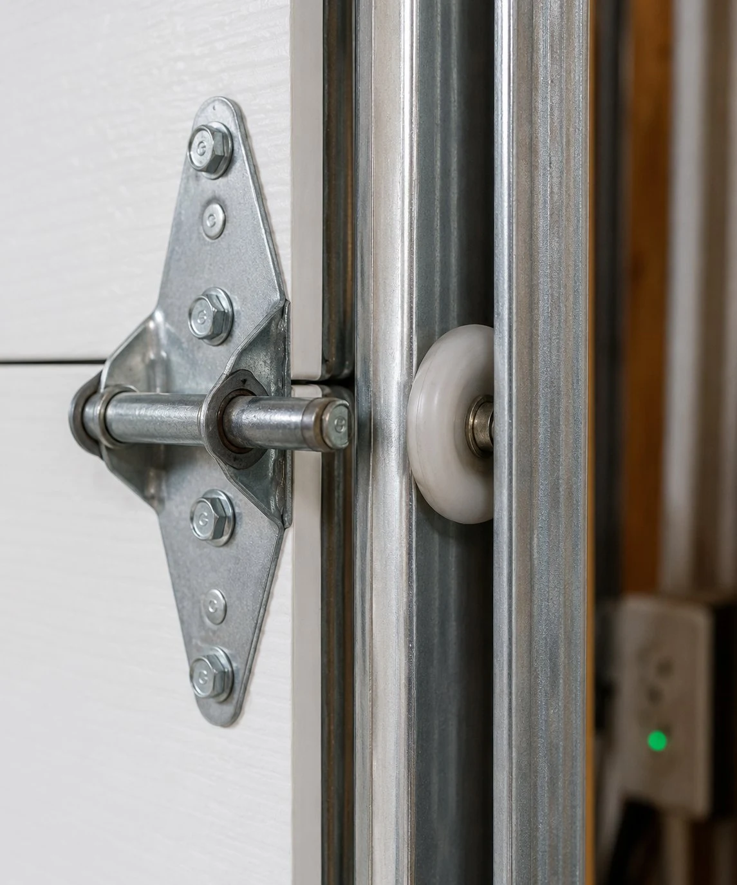

What "off track" actually means
A garage door runs on two vertical tracks — one on each side of the opening — using rollers that ride inside the track channel. When rollers come out of the track, the door can't travel up or down correctly. It may be visibly crooked, stuck partway, or completely inoperable. In serious cases, the door leans against one side of the opening and the track is bent.
The most important thing to know: do not run the opener on a door that's off track. The opener will try to force the door through a path it can't follow, which bends the track and adds significant cost to the repair. Leave the door where it is and call us.

Why doors come off track
Vehicle impact
The most common cause — someone clips the door with a car bumper, shopping cart, bicycle, or moving equipment. Even a minor impact can knock a roller out of the track.
Worn or broken rollers
Nylon rollers crack and degrade over time, especially after 10–15 years of use. A roller that's lost its wheel rides on the metal stem only, eventually vibrating out of the track entirely.
Broken cable or spring
When a cable snaps, the door loses counterbalance on that side. The resulting load imbalance can pull a roller out of the track as the door shifts.
Track obstruction or misalignment
Something blocking the track path, or tracks that have shifted out of plumb over time, can cause rollers to jump the track under normal operation.
"We get a lot of off-track calls where the homeowner has already tried to push the rollers back in by hand. That sometimes works if the door came off clean, but more often the track has developed a slight bow at the point of exit and the roller keeps jumping back out. The right fix is to reseat the rollers with the door under proper spring tension, check and correct any track issues, and replace the rollers that caused the problem. Trying to do it without the right tools is how people get hurt — those doors are heavy without a functioning spring."
Off-track repair questions
Can I fix an off-track door myself?
We'd advise against it. Without the spring under proper tension, the door is extremely heavy. If the track is bent or the spring is also broken, it's genuinely dangerous. Call us.
How much does off-track repair cost?
Off-track repair runs $100–$250 for most residential situations. If the track is bent or rollers need replacement, add $80–$150. Written quote before work starts.
How long does it take?
Most off-track repairs are completed in 45–90 minutes. We check the full roller set and track alignment before leaving.
Will the opener need to be reprogrammed?
No. Getting the door back on track doesn't affect the opener programming. We do verify the opener's limit settings and force settings after the repair.